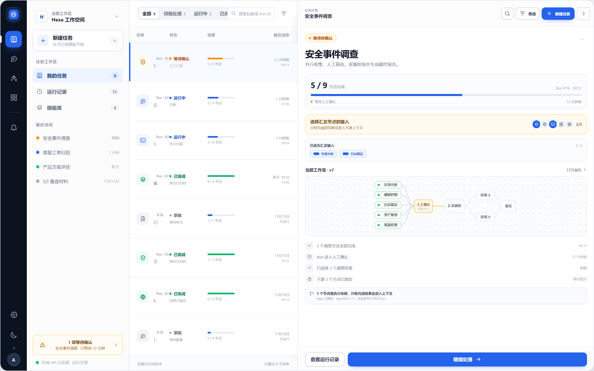
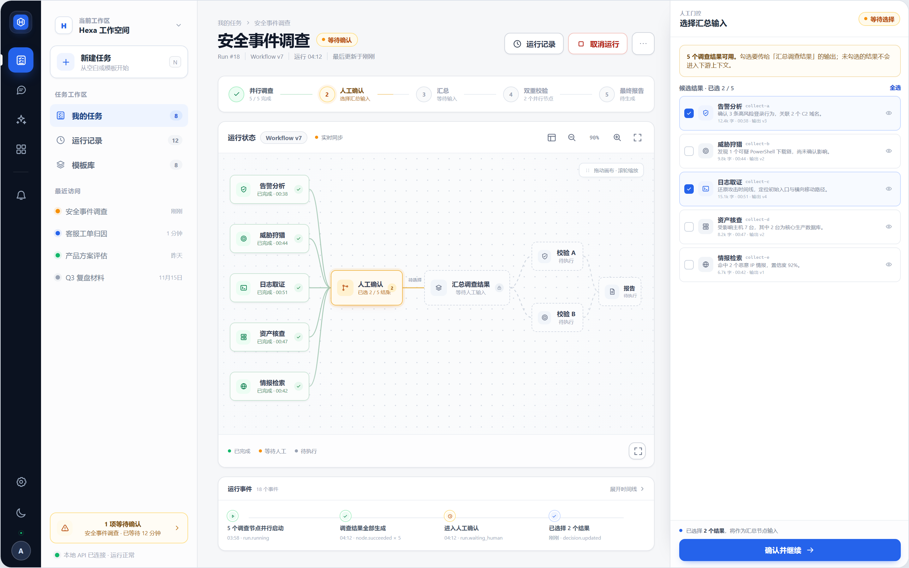
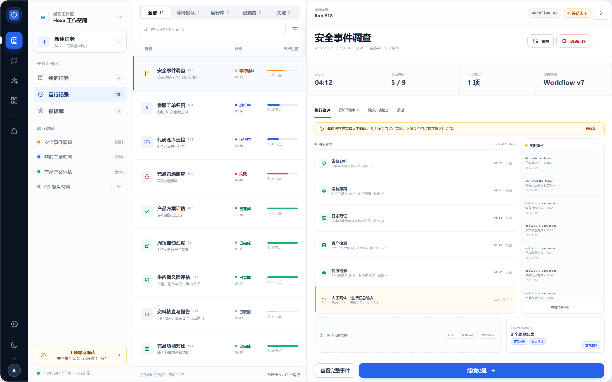
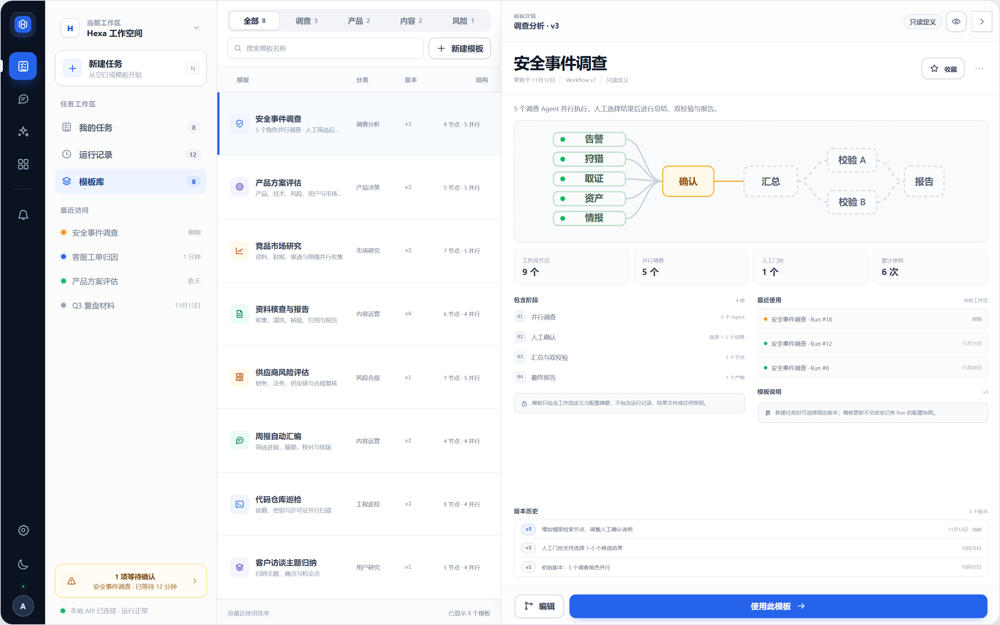
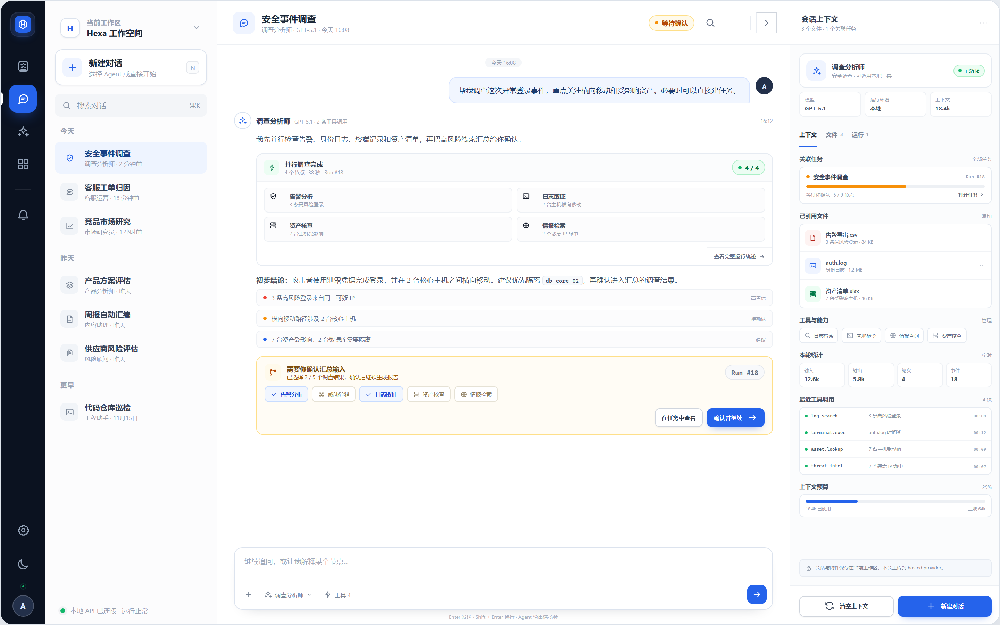
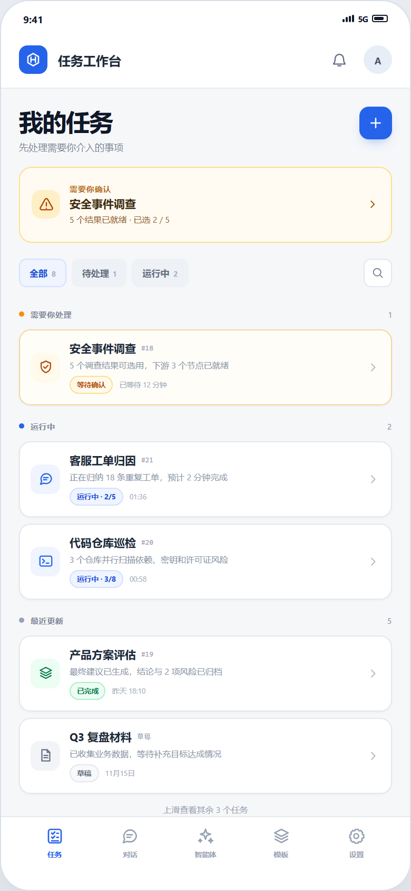
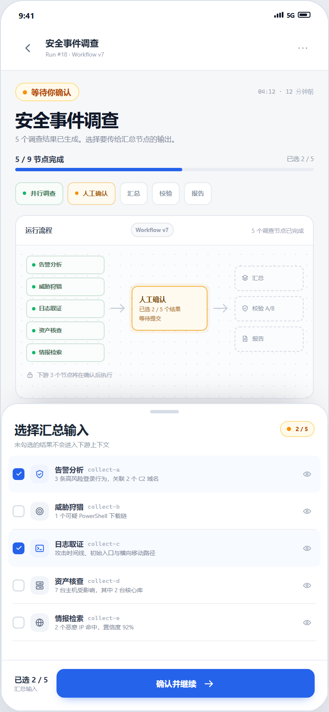

待处理任务通过顶部筛选与首行状态共同强调同一个下一步，不再重复页头提示。
Hexa · Task Workbench
任务作战台 / Attention-first cockpit
把“需要人介入的事”放在最前，把运行的证据和下一步放在同一视线上。




Conversation / 对话与任务同屏
对话历史在上下文侧栏；主线程保留运行卡片、关键发现和人工确认；右侧是 Agent、关联任务、文件与上下文预算。

Mobile / 关键状态


Design principles
人工确认时同时看到 DAG、候选输出、已选数量与继续按钮，不让人来回切页。
用克制的状态语言表达运行、等待和失败；事件流保留每次 Run 的完整证据。
沿用 Hexa 应用壳；列表页统一为白底 table + 全高可收缩右栏
不引入 Cloud 部署、上传、余额或 hosted provider 入口
Visual tokens
Rail / Ink#0B1220
Workspace#F6F7F9
Action#2563EB
Human gate#F79009
Succeeded#12B76A
Hairline#E4E7EC